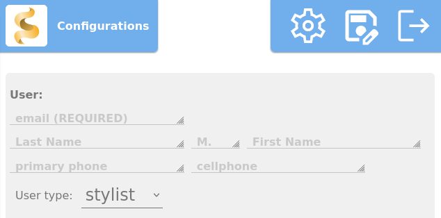

Introduction
Welcome and thank you for using Sif. The completely free, offline, open source, multi-user and platform/OS agnostic CRM (customer relation management) tool that's geared towards hair dressers.
Sif is a little different than your average "App".
The workflow goes like this:
- You select a .db (database) file to load into Sif (if it's your first time using is, there's a "sif.db" file in the "db" folder for you to start off with.)
- Any and all changes are held in memory
- On logout (or save), Sif will write out all changes to a file and ask you where you want to save it.
This workflow has advangtages and disadvantages. The advantages being that you're able to make multiple copies and/or backups all of your appoints, inventory, customer list, receipts, etc. This also means you can have multiple files for mulitple users, locations, positions, etc. All your work information in one file. It also means that, as long as you have a copy of the file, Sif and a device, you can manage your business from anywhere.
The disadvantage is that if the browser crashes or if you ignore the webpage's warning that you're leaving the page without saving, nothing gets saved. This is mitigated by, anytime an attempt is made to navigate away from the page, reload the page or close the page without saving, the page will ask for confirmation first before allowing you to navigate away. Sif is also programmed so that, everytime it's saving a file, it's including the date and time in the file name. You're free to change the name or overwrite previous files, but that's there for your convenience.
The one thing of note is that the .db file is not encrypted in anyway. Think of it like a rolodex of your customers. It may contain sensitive contact information. Though non-really life-threatening, you still wouldn't want to just hand that over to anyone so make sure to keep it safe.
Technical Intro
This is here in case anyone is interested in what this is/does in a technical term. If this is not you, feel free to
skip to the next section.
Sif is a single page application written completely in Javascript. Asides from sqljs and its wasm to load, read and write a sqlite3 database file, no external libraries are used. Due to how browser safety and security works, the database can only be loaded into memory as browser javascript are not allowed to write files arbitrarily to the file system. To mitigate this, events have been set on the event "beforeunload". The function to write out on before page unload (which only runs to export the sqlite db file) will only run if there was a change to the db.
Sif should, theoretically, be computationally more efficient than frontend frameworks like ReactJS due to the fact that:
- Sif keeps very little states in memory.
- Page/element redraws are judicious and manually determined.
- No minified code nor pseudo code interpretation.
- Modules are loaded and unloaded on demand.
This was done so that the source is completely open. Allowing anyone to change the code however they like without worrying about dependent libraries being deprecated or having security flaws or no longer being available/taken offline.
If all this sounds like a lot of work, it was...kind of. I sort of wrote a loose framework to do all this. It's ReactJS-like, again, doesn't require recompiling. As such, if someone wanted to add new modules, they can.
Set up
When using Sif for the first time, it'll ask you to create an user:

Only the email is required. The rest is simply if you wanted a place for people to read/copy down your phone number.
And... that's it for the most part. At this point, you can start taking appointments.
The rest is setting up inventory and/or services. I've taken the liberty to add a few as examples. Obviously, the amounts and product names aren't right, but they're there to get to started.
If you have regulars, you can add them ahead of time. In the contacts:
But none of that is an absolute must.
Invoice creation (recommended reading)
While most things are pretty self-explanatory, the one thing that's not obvious is what happens when a invoice is created.
In Sif, when a invoice is created, and there are items/products within that invoice, those items/products are deducted from the inventory. So let's say you have 20 shampoo bottles in stock. And invoice is created where 3 bottles of shampoo is on the invoice. When that invoice is created, 3 bottles of shampoo is deducted from the inventory and it'll show 17 bottles of that shampoo.
This means that when you're done with an appointment and you generate an invoice from that appointment, any items attached to that appointment will also be deducted from inventory.
With that said, this is all for bookkeeping/tracking purposes. If the stock of something goes into the negative, nothing bad will happen. You're also able to arbitrarily increase and decrease the amount of and product.
Why no delete? (recommended reading)
You'll probably notice that most things (contacts, inventory, appointments, invoices) cannot be deleted. Just marked as a status other than active. This is because appointments, contacts, inventory, etc. are so intertwined with each other that deleting just one thing might cause other things to not make sense. For example, if you want to look back on an old appointment, but the service or the person that's on that appointment has been deleted, the appointment itself wouldn't make sense.
If you need to "delete" a contact, product, appointment, etc. please make sure to mark them as something besides active.
Wish list
As much time as I've spent making this during my spare (more than a year). I would like to add more features to this, especially if people find this helpful. You'll notice an "about/donate" link at the bottom of the "config" page. I am a programmer by trade. My passion is to make programs and code to make their lives easier. If you're able, I would greatly appreciate if you can considering contributing some amount. I would recommend just 2 USD a month. I'm just one person and I live in Taiwan. With enough, I would love to make this, and other projects like this, my full time job. If that happens, I would love to add more into Sif. Here's my wish list for things I'd like to add:
- QR code/Bar code scanner
- You might notice that in inventory, there's a SKU code. I would love for this to be filled via bar code scanner
- I would also like for it to be able to generate a QR code for your contact information, website, anything else that you'd like to quickly pass to a customer
- Payment gateway
- Though this would make it not completely offline, I want the easiest possible way for any hairdresser, any one using this, really, to get properly paid. And sometimes, unfortunately, that's through online payments and/or credit/debit card payments.
- I also don't how feasible this would be as it might vary from country to country.
- Local network capabilities
- This is so, if you're working in a salon, this would allow everyone in that salon to coordinate and keep track of inventory, appointments, etc.
- PDF generation/Inovice templating
- Currently, invoice generation is mainly for record keeping and accounting. But there is a way to allow for an invoice to be generated into a printable PDF. I've actually done something vary similar to this at 2 previous jobs, but it does take a good amount of work.
- Once PDF generation is possible, I should also be able to allow for custom styling invoices. Adding your own logo or address/information, your own styles and colors, etc.
- Cloud backup option
- This sounds like it would make this not offline, but this can be an optional feature just to make sure that your data is backed up safely.
- Nothing too complicated. Just something that will allow someone to upload to their online cloud storage of choice easily. Like google drive or something similar.
Bugs/Troubleshooting/FAQ
- I found a bug! Where do I go to report it?
- The best place is here. You can also find this page in the "Source Code" link in the config page.
- I need some help. I'm not technical.
- If you're a contributer, those sites would be the best place to contact me for those. If you're contributing, I'll be more than happy to give you priority in helping out.
- If you're not, here still would be a good place to go. Even if you don't contribute, I would still love to help you out. It makes me happy that you're even using something I've made and I'd like that to continue.
- I have an idea/a feature request/a suggestion...
- Send them over. Really. I can't guarantee that I can do every one of them, but if it makes this better for people and it's possible, I'll consider it.
- Why is the logo blonde?
- Sif is the name of a norse goddess. She was known for her golden hair. I felt an app for hair dressers should be named after a goddess known for her hair.
- It took you over a year to code this all by yourself? Why did you go through all that trouble?
- During a time in my life when I wasn't doing so great, hair dressers were the only people that treated me like...well, just a regular person. It might just be small talk for them, but it meant a lot to me. I also have a lot of respect for hair dressers. I have some art background. Pencils, clay, water color, etc. The one medium I dare not touch is hair. In my opinion, people don't give hair dressers the respect they deserve. If you think painting or stone sculpting is hard, try doing it on a medium that swings and grows and stretches. Lastly, my wife is a former hair dresser. It was due to her insights and counsel that this can even be made in the first place.
- Are you up for building other things?
- Time, money, etc. permitting, yes. I dabble in just about everything so there isn't much I can't build programming-wise. Time and resources permitting, of course. Feel free to contact me if you have something in mind. At the very least, we can talk about it and what it would take.